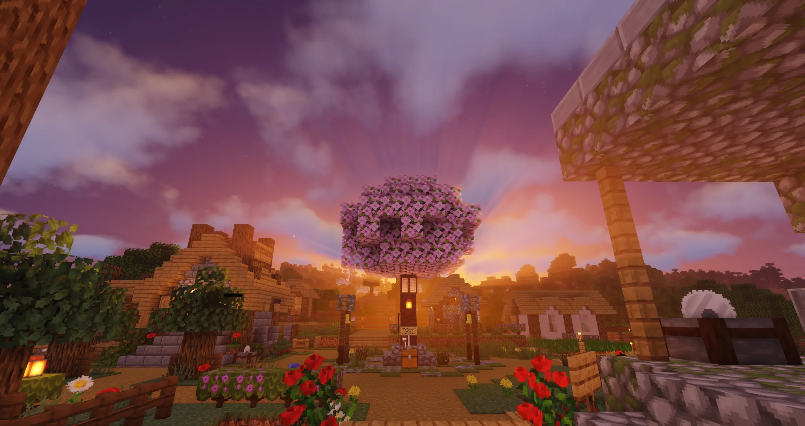
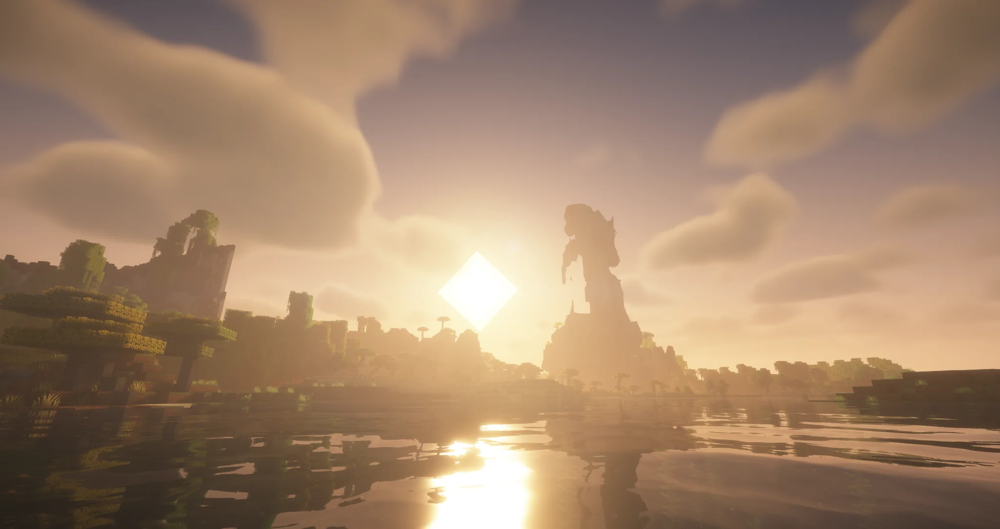

Seit 10.07.2026 onlineDeutscher Minecraft-Java-Server
Eine Survivalwelt,
die sich wieder groß anfühlt.
Vanilla-nahes PvE, bis zu 32 Chunks Sichtweite, geschützte Bauwerke und eine Community, die langfristig gemeinsam spielt.
Serveradresse
VanillaLichtung.de
Status noch nicht geladenExterne Abfrage nur nach deinem Klick.
VanillaLichtung in einem Satz
Weniger Ablenkung.
Weniger Ablenkung.
Mehr Welt.
VanillaLichtung macht aus Minecraft kein Minigame. Die wenigen Ergänzungen schützen deine Zeit und deine Bauwerke – während Reisen, Fortschritt und Entdecken ihren Wert behalten.
Das Serverkonzept
Vanilla bleibt der Mittelpunkt.
Keine Economy, keine Kits, kein Shop, kein /home und kein /tpa. Dafür eine Welt, in der Wege, Bauwerke und gemeinsame Infrastruktur wirklich etwas bedeuten.
Weit sehen
Bis zu 32 Chunks Sichtweite lassen Berge, Küsten und Bauwerke als zusammenhängende Welt wirken – nicht als kleine Insel im Nebel.
Sicher bauen
Jede Person startet mit 15 Claim-Chunks. Für jeweils 90 Minuten Spielzeit kommt ein weiterer hinzu.
Fair zusammenspielen
PvP ist deaktiviert. Im Mittelpunkt stehen Erkunden, Bauen, Farmen und ein respektvoller Umgang miteinander.
Langfristig bleiben
Die Welt ist auf langfristiges Survival ausgelegt – ohne Shop-Systeme, bezahlte Vorteile oder künstlichen Fortschrittsdruck.
Echte Aufnahme vom Server
Nachts endet die Sicht nicht am nächsten Chunk.
Weite Horizonte, ruhige Küsten und Lichtpunkte in der Ferne: Genau dafür ist VanillaLichtung gebaut.

Raum zum Entdecken
Eine Welt, die neugierig macht.
Die Bilder sollen nicht bloß Dekoration sein. Sie zeigen, was den Server ausmacht: echte Weite, markante Landschaften und Orte, an denen neue Projekte entstehen können.
- vorbereitete Overworld mit gesetzter Weltgrenze
- hohe Sichtweite als zentrales Servermerkmal
- ruhige, langfristige Community statt kurzlebiger Minigames
In wenigen Minuten dabei
Einfach joinen.
Einfach joinen.
In Ruhe ankommen.
Die Freischaltung schützt die Community, ohne aus VanillaLichtung eine geschlossene Privatwelt zu machen.
Server hinzufügen
Trage VanillaLichtung.de im Minecraft-Java-Client ein. Ein Port ist nicht nötig.
Kurz freischalten
Fülle das Formular aus. Es hilft dabei, Griefer und Wegwerfaccounts fernzuhalten.
Losspielen
Nach der Freischaltung gelangst du vom Spawn direkt in die langfristige Survivalwelt.
Bereit für deine eigene Lichtung?VanillaLichtung.de
01SEP
2026
2026
Gemeinsames Server-Event
Auf Discord dabei sein
Das End öffnet für alle.
Bis dahin wächst die Overworld-Community zusammen. Am 01.09.2026 beginnt die gemeinsame Suche nach Endstädten und Elytren.
Klare Grundsätze
Regeln, die man sich merken kann.
Sie schützen das gemeinsame Survival und sind deshalb bewusst einfach gehalten.
Kein Griefing
Nichts zerstören, beschädigen oder nehmen, was anderen gehört.
Fair spielen
Keine Cheats, kein X-Ray, kein Duping und keine unfairen Hilfsmittel.
Claims respektieren
Geschützte Gebiete und die Umgebung fremder Projekte werden respektiert.
Freundlich bleiben
Konflikte ruhig klären und andere Spieler fair behandeln.
Mit Augenmaß farmen
Große Anlagen, die den Server stark belasten, vorher abstimmen.
PvE bleibt PvE
Das deaktivierte PvP wird nicht über Umwege umgangen.
Gemeinsam statt anonym
Die Community gehört zum Server.
Auf Discord findest du Neuigkeiten, Absprachen zu Projekten und Hilfe, falls im Spiel etwas unklar ist. Voten hilft neuen Spielern, VanillaLichtung überhaupt zu entdecken.
Aktuell
- Gemeinsame Öffnung des Ends
- 15 Claim-Chunks als neuer Standardwert
- Discord-Community eröffnet
- Schutzsysteme und Anti-Xray erweitert
Kurz beantwortet
Häufige Fragen.
Brauche ich Mods?+
Nein. Ein normaler Minecraft-Java-Client reicht aus. Shader und Ressourcenpakete sind freiwillig.
Gibt es Teleportbefehle?+
Nein. Es gibt bewusst kein /home, /tpa oder /spawn. Wege und gemeinsame Infrastruktur bleiben dadurch wichtig.
Wie funktionieren Claims?+
Du startest mit 15 Claim-Chunks. Alle 90 Minuten Spielzeit erhältst du einen weiteren Claim-Chunk.
Ist der Server Pay-to-Win?+
Nein. Freiwillige Unterstützung gibt keine Items, Rechte oder spielerischen Vorteile.
Wie lautet die Adresse?+
Im Minecraft-Client genügt VanillaLichtung.de. Dieselbe Domain öffnet im Browser auch diese Website.